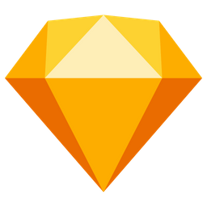

WHAT'S NEXT
Challenge UI/Dev Front
Février 2019 • 3 min

üìö Projet
Création d'une plateforme de démocratisation des programmes des élections européennes
üë©üèª Role
UX/UI Designer
⏰ Période
Février 2019
üõ† Outils


üìñ Contexte
D'élections en élections, la participation des jeunes de 18 à 25 ans est toujours plus en baisse. A l'occasion des élections européennes en mai 2019, l'objectif est de proposer une plateforme permettant de rendre plus accessible les programmes et les idées des listes électorales auprès de cette cible.
üîç Probl√©matique
Comment rendre les programmes des listes électorales plus accessibles auprès des jeunes européeens ?

üí° Solution
Nous avons créé une plateforme numérique avec une partie d'informations sur les conditions de vote et les différentes listes candidates. La fonctionnalité principale se présente sous la forme d'un questionnaire d'opinion, "Match my Ideas", où l'utilisateur donne son avis sur les grands enjeux contemporains. A la fin du questionnaire, l'utilisateur remplit un rapide formulaire pour accéder aux résultats. Les résultats présentent sous forme de pourcentages les 3 listes qui correspondent le plus aux opinions de l'utilisateur.
üé® Design
Pour plaire à la cible des 18-25 ans, le questionnaire se présente sous la forme de cards où l'utilisateur swipe à gauche ou à droite en fonction de son opinion. En cas d'avis neutre, il lui suffit d'appuyer au centre de l'écran. Le principe du swipe s'inspire directement du fonctionnement des apps de rencontres, tout comme la présentation des résultats finaux présentés sous la forme de pourcentages de compatibilité. Concernant la direction artistique, nous avons choisi de nous éloigner de la palette des institutions européennes (bleu et jaune) et de choisir des couleurs pastels sur les tons de bleu pour rassurer la cible qui se montre très méfiante en ce qui concerne la politique.